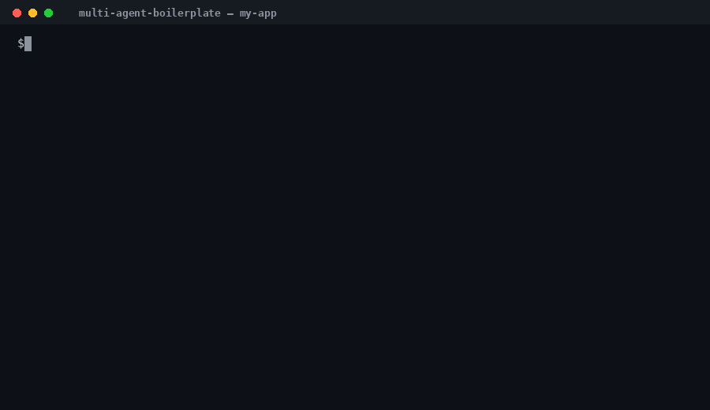

377 curated skills, project-local guardrails and a 10-suite self-check, pre-wired into 13 agents. Clone it, run one command, and your agent already knows how your project works.
gh repo create my-project --template ur-sriram/boilerplate --clone && cd my-project && ./scripts/bootstrap.shCreate, bootstrap, verify — then drive an agent through plan → TDD → verify → review.

Every layer loads only when the task needs it, so the agent stays fast.
TDD, debugging, code review, UI polish, git safety — every skill is mapped to exactly one governing rule, so the agent loads a proven workflow instead of improvising.
Short Markdown files instead of one giant prompt. The agent reads only the rules the current task needs, which keeps every message cheap.
A hook blocks any write outside the project folder — on Windows, macOS and Linux — and the package caches stay inside the project too. Nothing leaks into your global config.
Spec-driven templates plus ten slash commands turn “build me X” into a written spec, a plan and a task list — then implement it test-first.
/remember writes a decision, discovery or gotcha into the project-local store; /recall finds it again, and the session-start hook surfaces it automatically. Credentials are scrubbed on write.
Scripts parse, links resolve, files stay under 400 lines, every agent has the same capabilities, the skill map is current. CI runs the same checks you run locally.
Delete the folder and it is gone. The only exception is a self-test sandbox in the system temp directory, which is removed when the run ends.
Three layers, one context window saved.
┌─ ALWAYS LOADED ─────────────────────────────────────────┐
│ AGENTS.md ← the short index (≤ 1,000 tokens) │
└──────────────────────────┬───────────────────────────────┘
│ points to
┌─ LOADED WHEN NEEDED ─────▼──────────────────────────────┐
│ .agents/rules/ ← 7 short rule files │
└──────────────────────────┬───────────────────────────────┘
│ points to
┌─ LOADED ON DEMAND ───────▼──────────────────────────────┐
│ .agents/skills/ ← 377 skills, each with a rule │
│ .specify/ ← spec-driven development templates │
└─────────────────────────────────────────────────────────┘
One command, ten suites, ~seconds.
| # | Suite | What it proves | Result |
|---|---|---|---|
| 1 | verify-tools | Runtimes and MCP command resolution | PASS |
| 2 | verify-scripts | Every script parses and hooks dry-run | PASS |
| 3 | verify-file-limits | No source file over 400 lines | PASS |
| 4 | verify-links | Every Markdown link and anchor resolves | PASS |
| 5 | sync-agent-adapters | Skill junctions exist for every agent | PASS |
| 6 | test-bootstrap | Setup works in a throwaway sandbox | PASS |
| 7 | skills-index | The skill wiring map matches disk | PASS |
| 8 | verify-adapters | All 13 agents have identical capabilities | PASS |
| 9 | specify-integrity | Vendored Spec Kit files are untouched | PASS |
| 10 | opencode-plugins | Every guardrail hook satisfies the loader contract | PASS |
Same rules, same skills, same slash commands — whatever you point at the folder.